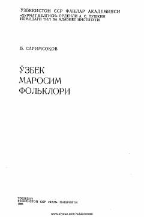

OMOʻzbek marosim folklori janrlari, ularning poetik tabiati va tarixiy asoslari haqidagi ilmiy tadqiqot.
Ushbu monografiyada oʻzbek marosim folklori janrlarining tarkibi, poetik tabiati va genetik asoslari ilmiy tahlil qilinadi. Kitobda qadimiy urf-odatlar, marosimlardagi ramzlar hamda soʻz va harakat nisbati kabi masalalar atroflicha yoritilgan.